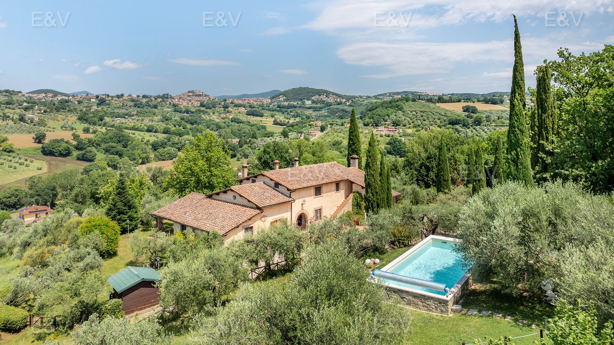

€980.000
Amelia, Umbria, Italy
Open the listingRefined Amelia hillside farmhouse of two residences linked by a central loggia, with exposed beams, terraced courtyard and a raised stone private pool set among roughly two hectares of olives overlooking the town — exceptional Umbrian character under €1M.
Opened 11 Sep 2026 via E&V expose __NEXT_DATA__ (EN). salesPrice €980000. 5 bed / 5 bath / ~558 m² / plot 20800. Private pool verified on expose. Shop=Engel & Völkers Assisi-Spoleto. Locale Amelia. UUID/ref deduped against board + 09-11 existing files.